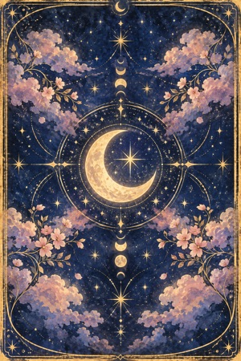
送るか待つか、迷う夜に「送る一文」テンプレート集
LINEに登録してくれたあなたへ
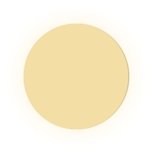
あなたの月のタイプから選ぶ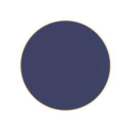
新月さん（言えずにいる）02・03へ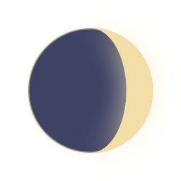
三日月さん（返事を待っている）01・眠れない夜へ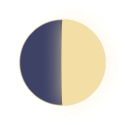
半月さん（温度差がある）04へ 満月さん（会いたい気持ちでいっぱい）03・05へはじめに
送るか、待つか。迷う夜は、正解の一文を探すより「自分が後悔しない一文」を選ぶほうが、気持ちが軽くなります。
返さないと決めている人の気持ちは、どんな一文でも変えられません。このテンプレートができるのは、「返したい気持ちが少しでもある人が返しやすくなること」と「送ったあなたが後悔しないこと」です。
どの文も、2人の思い出や共通の友だちがなくても、相手との関係がどんな形でも送れるものだけにしています。
送るか送らないかを決めるのは、いつもあなたです。
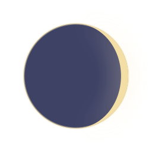
返事を待って眠れない夜に- 通知をオフにして、朝に1回だけ見ると決める
- 送りたい文は、LINEではなくメモに書く。「送信」は朝の自分にまかせる（わたし日和の「送る前の一行メモ」）
- 今夜は月を見て、スマホを置く。それだけで十分です
一行メモの書き方
メモには、この形で1行だけ書いてみてください。
朝に読み返して、その理由がまだ自分にとって大切なら、送っていい合図です。
送る一文の4つの約束
- 何のために送ったのか、一目で分かる
- 友だちに送るくらいのフランクさで。「会いたい」「さみしい」など恋の気配は出さない
- スルーしても大丈夫な逃げ道を作る
- 返事が来るまで、2通目は送らない
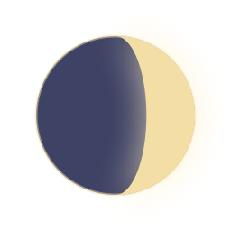
送る前の30秒チェック送信ボタンを押す前に、3つだけ確かめてみてください。
- 何のために送るのか、一言で言える？
- 相手が、スタンプ1つでも返せる文になっている？
- もし返事が来なくても、送ったことを後悔しない？
3つとも「はい」なら、送っていい一文です。
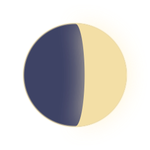
01既読のまま返事がない時返しそびれた気まずさを、こちらから外してあげる一文。相手は「ごめん！」と返しやすくなります
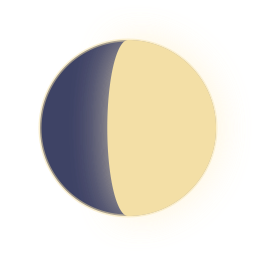
02しばらく連絡が途切れている人に目的は「元気か知りたい」だけ。どんな相手にも送れて、「元気だよ」の一言で返せます
（季節に合わせて：暑い日が続くけど など）
目的は気づかいだけ。季節の話なので、思い出や共通の話題がなくても使えます
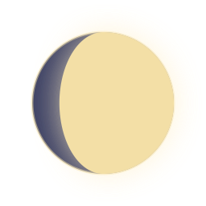
03会いたい、誘いたい時誘う理由が「1人だと行きづらい」なので、恋の気配が出ません。「日にちは合わせられる」で都合を気にしなくてよくなり、「行けそうな日があったら」で行かない選択も残るので、相手は気軽に答えられます
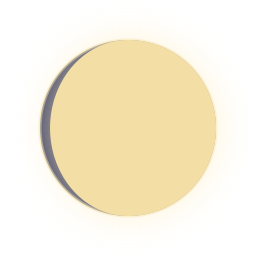
04温度差を感じる時・返事がそっけなかった時ここでは、あえて質問をしません。いったん区切ることで、追いかける形にならずにすみます
次に送るのは、1週間ほどあけてから。02の「元気にしてる？」くらいの軽さで
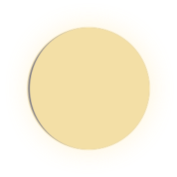
05年末年始の3つの節目 12月「クリスマス」と言わずに「忘年会」。誘う目的がはっきりしていて、恋の気配が出ません
年末年末年始のあいさつは、送る理由がいちばんはっきりしている一文。返すのも当たり前なので、しばらく連絡していない相手にも使えます
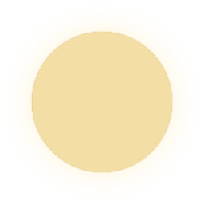
06送らないほうがいい一文- 「なんで返事くれないの？」「怒ってる？」「忙しい？」（責める・確かめる）
- 「さみしい」「会いたい」「〇〇のこと考えてた」（恋の気配が強く、相手が身構える）
- 何のために送ったか分からない一文（「何が言いたいの？」と思わせてしまう）
- 返事が来ないうちの2通目、3通目
- 長い文
重い一文 → 軽い一文 言い換え表
送らずに、一行メモへ。どうしても送るなら
送らずに、一行メモへ
07返事が来たら
- 相手の言葉を1つだけ拾って返す（「元気だよ〜」には「よかった！最近どんな感じ？」）
- 待っていた気持ちは書かない（「やっと返事きた」は書かない）
- 相手の返事と同じくらいの長さ・同じくらいの軽さで返す
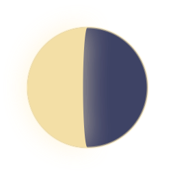
08送らないと決めた夜に送らないことも、立派な一歩です。
メモに書いた一文は消さずに残しておいて、送りたくなった日に読み返してみてください。
もっと一緒に考えたい時は
あなたが選んだ3枚で読む、無料の「月のことのは鑑定」は、LINEにことのは鑑定と送るだけ（おひとり1回）。
今の流れと、あなたに合う「次に送る一文」を一緒に考えます。
LINEで【ことのは鑑定】と送る☾ このページは、スクリーンショットかブックマークで保存しておくと、迷った夜にすぐ開けます。